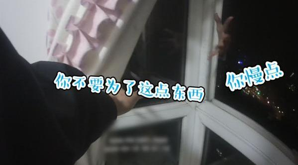

今天已经有人把我的微博截图，在公众号洋洋洒洒写一篇文章做提示了。不仅如此，还有媒体转发。我不能怪他。他也是为了吃饭，博眼球，博关注。这种事情真的两难。我说，就会有很多人知道。我不说，大家也没法操作。只能希望大家顺利。希望大家知道，我是真心希望各位都赚钱。我尽力了。
私信看多了就会觉得找伴侣这件事，运气因素太大，不公平。明明很多优质男女，却因为没有缘分碰不到一起。可能那个合适的人就住你隔壁小区你都不知道。以前很喜欢的一部电影《向左走，向右走》。主要是因为喜欢男女主角，现在看的事情多了，想起来不胜唏嘘。
不想当大厨的小偷不是好的蜘蛛侠。@澎湃新闻:【#小偷在业主家做饭#，被发现躲到28楼窗外】4月18日，重庆。高女士发现外出的邻居家亮着灯，怀疑进贼。民警到场发现小偷躲在28楼窗外，之前还在屋内做饭煮香肠，并打算过夜。目前，嫌疑人梅某被采取刑事强制措施。其交代自己手头紧，盯上家中无人且未反锁门的高层住户。（素材来源：相关人士）小偷在业主家煮饭，被发现躲到28楼窗外 澎湃新闻的微博视频 26万次播放 02:20
瓜不瓜的其实我也不关心，跟我没关系。就是想说几句不知道会不会挨骂的话：无论男女，约P没问题，现在也不是跳个舞就定流氓罪的年代了。但是，不要欺骗你的男朋友或者女朋友。如果人家就是想认认真真和你谈恋爱，你要约P就别跟人家在一起。更重要的是，婚后就别约了。结婚算是一种承诺，也是责任。虽然听起来像场面话，但是实际上对两个人都很重要，弄不好会失去很多很重要的东西。真忍不住就离了再约。单身的朋友啊，珍惜一个人的日子吧。
提醒一句，最近转托管的前后，各位不要到处议论。没有场内高溢价买入的对手盘，到时候各位转换后也无法高价卖出。为了你自己，不要与别人讨论，自己做。稍后我会把这几条设置为粉丝可见。@ETF拯救世界:关于最近原油期货移仓的问题，说一下。目前计划持仓的华宝油气（0.7%）以及石油基金（0.6%），没有移仓问题。两个基金是持有石油类上市公司股票。持仓占比0.47%的南方原油是持有原油期货。这个会有移仓问题，但是由于持仓占比很小，不用太在意，尤其是单份持仓金额很少的朋友。如果比例虽然小，但绝对金额比较大的朋友，场内的话实在担心的，可以先出。场外绝对金额大的朋友不建议直接赎回。我建议你考虑场外转场内卖出。因为目前场内大幅溢价，溢价率将近50%。你可以将场外份额转入场内，在场内卖出。我们的南方原油场外成本0.7，目前场内价格0.81，如果你转入场内时价格没有大变化，你甚至还能赚十几个点离场。具体怎么转，可以百度查查，或者咨询你的场外持有机构。你可以先去问问你的场内交易券商基金席位号，然后与场外持有机构沟通转入。
医药开始升温，热度持续增加。继续持仓，等待15000狂热或趋势变化。@ETF拯救世界:目前医药已经运行到相对高估+牛市上升趋势阶段。这个阶段非常难。难在它不是便宜的阶段，可以买可以安心持仓。它虽然是上升趋势，但随时会转头向下。这个区间考虑的不是加仓，而是如何动态平衡。既然已经到了这个区间，就照例给一个区间上限。目前医药的区间上限是15500左右。这个点位是特大级超级牛市的极限点位。当然，首先是11600站稳了再说吧……
之前已经建议过持仓南方油的朋友可以转托管场内卖出。昨天中行又爆雷，估计更多朋友会担心。已经与且慢沟通完毕，他们今天会做一个方便大家操作转托管的东西出来（之前步骤繁琐场外机构都如此），明天可以上线。整个流程我会非常具体的写一篇东西今晚或明早发布。致敬且慢，一切以客户利益为优先考虑。@ETF拯救世界:关于最近原油期货移仓的问题，说一下。目前计划持仓的华宝油气（0.7%）以及石油基金（0.6%），没有移仓问题。两个基金是持有石油类上市公司股票。持仓占比0.47%的南方原油是持有原油期货。这个会有移仓问题，但是由于持仓占比很小，不用太在意，尤其是单份持仓金额很少的朋友。如果比例虽然小，但绝对金额比较大的朋友，场内的话实在担心的，可以先出。场外绝对金额大的朋友不建议直接赎回。我建议你考虑场外转场内卖出。因为目前场内大幅溢价，溢价率将近50%。你可以将场外份额转入场内，在场内卖出。我们的南方原油场外成本0.7，目前场内价格0.81，如果你转入场内时价格没有大变化，你甚至还能赚十几个点离场。具体怎么转，可以百度查查，或者咨询你的场外持有机构。你可以先去问问你的场内交易券商基金席位号，然后与场外持有机构沟通转入。